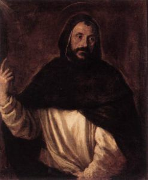

Childhood in Castille

Blessed Cecilia Caesarini, who was received by St. Dominic into his new order, in her old age described him thus : He was thin and of middle height. His face was handsome and somewhat fair. He had reddish hair and beard
From Osma to Denmark
When Dominic was seven his education was put in charge of Jane’s brother, a priest, and when he was fourteen he entered the school at Palencia, one of the few higher schools in Spain at that time and soon to become a university,
Preaching in Southern France
From Denmark, Diego and Dominic returned to Spain with news of their mission accomplished, only to be sent back two years later to fetch the princess, and then to find that she would not return. Their time in Scandanavia,
The Order of Preachers

In these troubled times, even after the Cistercians had finally returned home, Dominic went on preaching. Sometimes he stayed at the convent in Prouille which in 1213 he rebuilt and where William Claret was his companion.